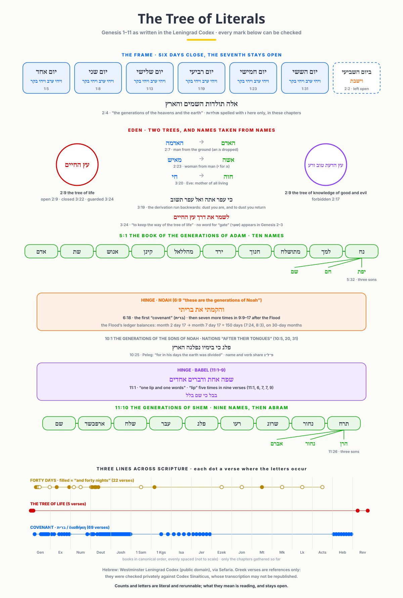
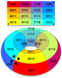
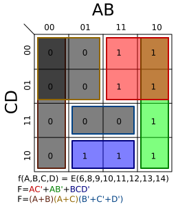
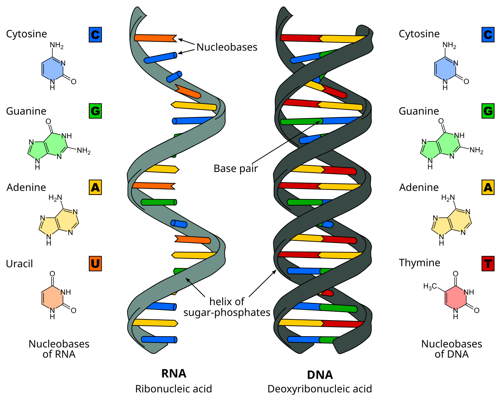
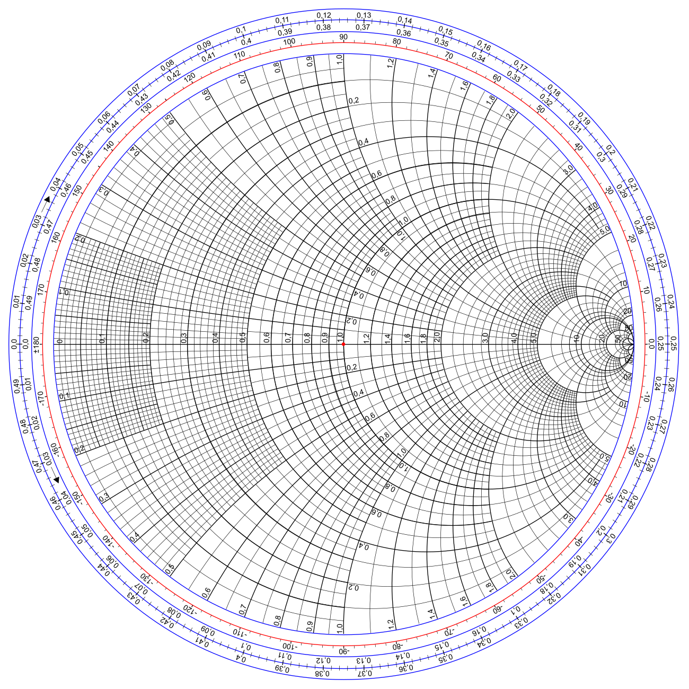
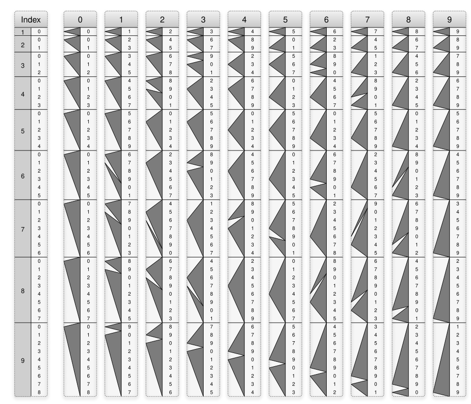

Tap a lens to enter · ← → to move · Esc returns here
The tree of literals
Genesis 1–11 drawn from the Leningrad Codex: six days that close and a seventh left open, two trees, names taken from names, two lines of ten generations with the Flood and Babel as hinges, and three lines that run on through scripture. Every Hebrew word shown is checked against the verse it cites; the counts can be rerun.

A flat map that is secretly a donut
A Karnaugh map lays out every combination of a few yes/no inputs on a grid, arranged so that neighbours differ in exactly one input. The edges wrap around: the right side touches the left, the top touches the bottom. Fold it and the flat grid becomes a torus.
The commons is laid out the same way: one place sits beside another when they differ by a single bit. The flat drawing is a view; the wrap-around is the real shape.


One map, two readings
Circle the groups of 1s and you get a short formula for the function. Circle the groups of 0s instead and you get its exact opposite. Same map, same cells — two ways of reading it.
The commons uses this pairing everywhere: XOR reads what differs, XNOR reads what agrees. Neither reading is the map; both come from it.


Knowing the carry before it arrives
Adding binary numbers the slow way means waiting for each carry to ripple from one column to the next. A carry-lookahead adder works every carry out at once from what is already present. When four bits are added, the final carry lands on bit 4.
Bit 4 is also where a byte splits into its two halves (nibbles). The commons reads colours, rows and columns from exactly that boundary.

Four letters, paired with their opposites
DNA writes with four bases, which fit exactly in two bits. Each base pairs with its partner — A with T, C with G — and the partner strand runs the other way. RNA swaps a single letter: U in place of T.
The commons has its own four-letter alphabet in two bits (< = > ?). Pairing as complement and reading in reverse are the same moves.


An endless plane inside a circle
Radio engineers use the Smith chart to fold an infinite range of impedances into a single disk. Every point inside is a reflection: how much of a signal bounces back, and at what angle.
The commons works the same way — a large space is read through one bounded view, and the view is honest about being a view.


Multiplying by following the arrows
Genaille–Lucas rulers, from the 1890s, let you multiply without carrying anything in your head. Line up the rulers, follow the slanted triangles from right to left, and read the answer off by position.
In the commons, where you stand is how you read: position carries the answer, not a password or a lookup.


Whose pictures these are
| Lens | Image | Author | License |
|---|---|---|---|
| The Tree | Westminster Leningrad Codex (via Sefaria; Greek checked against Codex Sinaiticus, references only) | Leningrad Codex; tree drawn by Brian Thorne | Public domain (Hebrew text) |
| The Torus | Karnaugh map torus | Cmglee | CC BY-SA 4.0 |
| Read & Write | K-map 6,8,9,10,11,12,13,14 | Cburnett | CC BY-SA 3.0 |
| The Carry | Four bit adder with carry lookahead | Trex4321 | CC0 |
| The Strand | Difference DNA RNA | Sponk | CC BY-SA 3.0 |
| The Reflection | Smith chart gen | Wdwd | CC BY-SA 3.0 |
| The Path | Genaille-Lucas rulers full | Worrydream | Public domain |
The six images are shown unmodified, from Wikimedia Commons. The commons drawing and this page are by Brian Thorne.
Check it yourself
- The clock rule
K(p,C) = rotl(p,1) ⊕ rotl(p,3) ⊕ rotr(p,2) ⊕ CwithC = 0x1Don 16 bits returns every starting value to itself after 8 steps. From0x4242the dial shows exactly those 8 states; any language can rerun it. - The 240 roots of E8 split 112 + 128, each of squared length 2 — checked by machine in Coq.
- The four-cornered atom on the commons is one 2-bit table read four ways; the data sits inside
commons.svg, readable by people and programs alike.
Source: github.com/bthornemail/unboxed